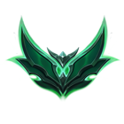
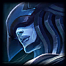
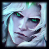
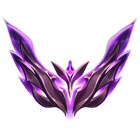
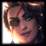
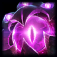

Canopée
Le système visuel de JungleDiff à partir de la v8. Il part de l'accueil v7 et garde ce qui fonctionne : le vert du crew, la Geist Mono, des données réelles partout. Il resserre le reste. Moins de cartes, moins d'arrondis, et des chiffres qui se lisent comme une feuille de temps.
Pour qui, pour quoi
- Qui
- Un crew fermé de 16 joueurs EUW, de Bronze à Master. On ouvre le site le soir après une session sur ordinateur, et le lendemain sur téléphone pour voir qui a perdu combien. Personne ne s'inscrit : on y est parce qu'on joue ensemble.
- La question de l'accueil
- Qui monte, qui coule, et qui a joué hier soir ?
- Trois mots
- PrécisChaque chiffre est aligné, comparable d'une ligne à l'autre, à l'unité près : LP, %, minutes.CompliceLe ton du crew. « Énorme Inter », le badge « Vous », l'écart avec le joueur juste au-dessus.VifUne partie finie il y a dix minutes se voit. Le direct et l'heure de synchro sont toujours à l'écran.
- Références
- Cartes de classement e-sport · podium sur l'art du champion, couleur de palier
- Strava · classements entre amis
- Linear · surfaces sobres, finition
- Sofascore · scores denses qui restent lisibles
- Ce qu'il ne doit pas être
- Un tableau de bord SaaS de plus, avec ses tuiles géantes et ses cartes arrondies partout. Un clone d'OP.GG, dense et bleu-rouge. Un site « gamer » néon.
- Contraintes
- Nuxt 4 et Tailwind v4, tokens dans main.css. Deux thèmes, clair par défaut. Interface en français, rangs en anglais. WCAG AA. Les images Riot (splash, icônes, emblèmes, objets) sont du contenu.
Le classement
Le classement garde la lecture que le crew aime : un podium de trois cartes posées sur le splash du champion principal, « L'échelle des rangs » où chaque joueur est un avatar sur son palier avec la trace des 7 derniers jours, puis la liste des autres comptes. Canopée lui donne ses chiffres condensés, la couleur de palier et l'or réservé au 1er et à « Vous ». C'est le seul endroit de l'accueil où l'image prend la parole, avec le joueur de la semaine.
Données réelles, Solo/Duo. Le trait sur l'échelle va de la position d'il y a 7 jours à la position actuelle, recalculée depuis lpChange7DaysSolo. La maquette n'embarque que quatre splash arts ; l'application les lit tous sur Data Dragon, et un champion sans image prend son portrait flouté.
Ce qui change
| Axe | Accueil v7 | Canopée |
|---|---|---|
| Surfaces | Chaque bloc est une carte blanche, arrondie à 20–26 px, avec une ombre portée. | Des cartes douces : rayon 18 px, filet léger et une ombre à deux couches, --shadow-card. Les rangées du classement et les parties sont des cartes teintées par leur palier ou leur résultat. L'ombre flottante reste pour la palette de recherche, les info-bulles et la barre mobile. |
| Rayons | 20–26 px, tous les contrôles en pilule. | Échelle 4 · 6 · 10 · 14 · 18. La pilule est réservée aux avatars, aux pastilles de chiffres (LP, écart, taux, niveau, position) et au point « en direct ». Les badges de texte restent à 4 px. |
| Typographie | Archivo gras partout, à la même largeur. | Archivo en trois largeurs : étendue pour les titres, normale pour le texte, condensée pour les chiffres. |
| Chiffres | De gros chiffres isolés dans des tuiles. | Des chiffres condensés et tabulaires, alignés en colonnes, toujours avec leur écart. |
| Couleur | Vert, or, rouge, et sept styles de pastilles. | Neutres teintés de vert. L'or marque le 1er et « Vous ». Les paliers servent de couleur d'écurie. |
| Mouvement | Ressort au survol de chaque carte, mascotte qui flotte en boucle. | Transitions d'état de 120 à 200 ms. Un seul moment animé : le classement qui se réordonne. |
| Images | Splash arts dans le héros, les trois cartes du podium et le joueur de la semaine. | Le splash art reste sur le podium et sur le joueur de la semaine, et chaque page garde au plus un splash art de héros (profil, partie). Le texte posé sur une image passe par un dégradé vers la bande sombre ou par une pastille sombre, jamais par un halo. |
| Classement | Podium, échelle des rangs et tableau : trois lectures du même ordre. | On garde les trois, retouchés : cartes à 18 px, couleur de palier, écart en LP en pastille, chiffres condensés. L'or ne marque plus que le 1er et « Vous ». |
Accueil actuel (v7)
La page / reproduite depuis le code (pages/index.vue et ses composants) avec les données servies le 21 oct. 2026. Couleurs, rayons et ombres sont ceux de main.css, y compris le thème sombre.
Ce qui la fait passer pour générée
- Tout est une carteBento, podium, échelle, lignes, parties, records : même fond blanc, même arrondi, même ombre. Plus rien ne hiérarchise la page.
- Des pilules partoutSept styles de pastilles (synchro, période, patch, LP, WR, smurf, compteur) se disputent l'œil. La pastille « −33 vs les 7 jours précédents » reste verte alors que le chiffre baisse.
- Une seule voix typographiqueArchivo 700 du titre au compteur. Les chiffres ne se distinguent pas des libellés.
- L'ouverture en tuilesQuatre gros chiffres en tête de page, le motif le plus répandu des tableaux de bord générés.
- Un mouvement décoratifRessort au survol, cartes qui montent de 4 px, mascotte qui flotte sans fin.
- Trois lectures sans hiérarchiePodium, échelle des rangs et tableau ont tous le même poids visuel. Canopée les garde, mais les distingue : art pour le podium, bandes pour l'échelle, liste pour la suite.
Ce qu'on garde
- Les données réelles partout, et le ton juste des libellés.
- L'échelle des rangs avec la trace des 7 jours, l'idée la plus originale de la page.
- L'écart en LP avec le joueur du dessus.
- Le vert du crew, l'or, la tortue.
- Geist Mono pour les heures, durées et identifiants.
- Les deux thèmes, et le clair par défaut.
Couleur, type, espace, mouvement
Toutes les valeurs sont des tokens. Un composant n'écrit jamais une couleur, un rayon ou une durée en dur. Les couleurs sont en OKLCH, les neutres sont teintés vers le vert de la carapace (teinte 165).
Deux thèmes, dessinés chacun
Chaque pastille montre la valeur Jour à gauche et Nuit à droite. Le thème Nuit n'est pas une inversion : les surfaces montent en clarté avec l'élévation, les accents sont un peu désaturés.
Neutres
Marque
Résultat
Paliers · données, identiques dans les deux thèmes
Page de partie
- L'or ne sert qu'à quatre choses : le 1er du classement, « Vous », le bouton de recherche mobile, et l'anneau de focus en thème Nuit.
- Le vert de victoire n'est jamais un accent décoratif. La couleur de résultat ne s'applique qu'à ce qui se gagne ou se perd : LP, victoires, séries.
- Un côté n'est pas un résultat. Le côté rouge peut gagner, il garde sa propre teinte.
- Les paliers sont des couleurs d'écurie : un bloc de position, une bande d'échelle. Jamais du texte, toujours lus avec --on-tier.
- --ink-3 est le gris le plus clair autorisé pour du texte (AA sur blanc).
Une famille, trois largeurs
Archivo est une police variable dont l'axe de largeur va de 62 à 125 %. Canopée s'en sert comme de trois voix : étendue pour nommer, normale pour lire, condensée pour compter. Geist Mono garde les heures, durées, patchs et identifiants.
42 parties à 57 % de victoires, dont 6 succès d'affilée. RememberV reprend 246 LP en une semaine.
| d1 | Canopée | 118 % · 780 · 44–84 px · −0,04 em |
| d2 | Dernières parties | 118 % · 740 · 28 px · −0,025 em |
| d3 | Records du mois | 118 % · 700 · 20 px |
| title | Champions du crew | 100 % · 640 · 17 px |
| body | Tout le crew, toutes files confondues | 100 % · 400 · 14 px · 1,55 |
| label | Parties classées | 118 % · 650 · 11 px · +0,09 em · capitales |
| fig-xl | 203 | 72 % · 680 · 64 px · tabulaire |
| fig-m | 15 / 8 / 9 | 72 % · 680 · 22 px · tabulaire |
| mono | EUW · Patch 16.19 · 36:28 · #EUWFR | Geist Mono · 500 · 12 px |
Grille de 4 px
Les groupes frères s'espacent par gap, jamais par des marges. La page fait 1280 px au plus, avec 16, 24 puis 32 px de gouttière. Les composants s'adaptent à leur conteneur, pas à l'écran.
- rail · 1100 px de cadre : la colonne de droite (336 px) apparaît.
- md · 768 px : navigation dans l'en-tête, barre mobile masquée.
- Le podium passe en trois colonnes à 640 px de conteneur, les lignes du classement gagnent le rang et l'écart à 560 px, la forme et le taux à 760 px, la carte de partie le KDA à 600 px et les objets à 700 px.
Des cartes douces
Un enfant n'est jamais plus arrondi que son parent. Les cartes (panneaux, parties, rangées du classement) sont posées par une ombre légère ; l'ombre flottante reste réservée à ce qui passe au-dessus de la page.
Panneau, partie, rangée
Le fond change, rien ne bouge
Palette, info-bulle, barre mobile
Fonctionnel, sauf une fois
Les transitions confirment un changement d'état. La seule animation qui se remarque est le classement : cartes, avatars de l'échelle et lignes glissent vers leur nouvel ordre. Sous prefers-reduced-motion, tout est instantané.
- 120 ms : survol, pression. 200 ms : changement d'état (interrupteur, segment). 360 ms : apparition.
- Aucune boucle infinie, sauf le point « en direct » qui signifie « en cours ».
- Pas de mise à l'échelle au survol, pas de carte qui décolle.
- Les chiffres comptent seulement quand la valeur change, à partir de celle déjà affichée.
Lucide, 1,75 px
Un seul jeu, en 16 et 20 px, trait de 1,75. Les images de Riot (champions, objets, emblèmes, rôles) sont du contenu et ne servent jamais d'icône d'interface.
Le vocabulaire
Chaque composant est montré avec les données du crew et ses états. Les contrôles répondent au clic. Une maquette marquée « exemple » ne contient pas de données réelles.
Boutons
Quatre rôles. Un seul primaire par zone.
- Hauteurs 28, 36 et 44 px. Au doigt, 44 minimum.
- Le survol change le fond, le bouton ne grossit pas.
- Le libellé dit ce qui va se passer : « Synchroniser », pas « OK ».
Filtres et navigation
Le segmenté choisit une vue exclusive. L'interrupteur active un filtre qui touche toute la page. Les filtres joueur portent l'avatar et un compte.
- Le segment actif se détache par la surface, pas par l'encre pleine.
- Le filtre joueur actif est le seul élément en encre pleine de sa rangée.
- Navigation : soulignement de 2 px sous l'onglet courant.
Recherche du crew
Un champ dans l'en-tête, une palette qui s'ouvre au-dessus de la page. Essayez de taper un pseudo.
- Ouverte par ⌘K, Ctrl K ou « / ».
- Résout localement dans la liste du crew, sans appel réseau par frappe.
- Le seul composant de la page avec une ombre portée.
Indicateurs
Les petites marques qui portent l'état d'une ligne : LP, résultat, forme, statut.
- « Sans LP » ne s'affiche que si c'est vrai : normale ou remake. Un rankChange nul n'affiche rien.
- 0 LP est un vrai résultat, en gris.
- La forme se lit de gauche (ancienne) à droite (dernière).

Promu Emerald IIIdentité
Joueur, champion, rang.
- Joueur : rond, comme l'icône d'invocateur du client.
- Champion : carré arrondi à 6 px, niveau en coin.
- Les rangs restent en anglais (« Emerald II »), comme dans le client et le reste du site.

18

Master657 LP Emerald II75 LP Non classéTableau des scores
Les chiffres de la semaine dans un seul panneau découpé par des filets, à la place de quatre tuiles.
- Une valeur, son unité plus petite, son écart en mono.
- Les parties jouées n'ont pas de couleur : jouer plus n'est ni bien ni mal.
- Un jour sans paire de rangs comparable (netLpChange: null) n'a pas de barre.
Classement
Podium, échelle des rangs et liste. Ici avec LeadOn vu par lui-même (« Vous »), puis un compte non classé.
- Le podium met le champion principal en art : medal de position, nom du champion, emblème du palier et avatar cerclé du palier qui débordent de l'image. Le 1er est plus haut et cerclé d'or.
- Sans splash art, la carte prend le portrait du champion, flouté.
- L'échelle répartit les paliers en bandes égales ; les avatars se placent sur des couloirs pour ne pas se chevaucher.
- Écart : les LP qu'il faut pour dépasser le joueur du dessus, en pastille.
- Quand la file ou le filtre change, tout glisse vers sa nouvelle place en 620 ms.
Ligne de partie
Une partie par ligne, regroupées par jour de Paris avec le bilan et les LP du jour.
- La carte de l'accueil v7, redessinée avec les tokens Canopée : liseré et dégradé de fond selon le résultat, « Victoire » ou « Défaite » en capitales au-dessus du pseudo, portrait du champion avec son niveau, objets sous la ligne de méta.
- Le KDA détaillé et l'heure apparaissent à 600 px de conteneur, les objets à 700 px.
- Les autres membres du crew dans la partie deviennent un « +N ».
En direct
Le bandeau des parties en cours, sous le tableau des scores, seulement quand quelqu'un joue.
- Le point pulse : c'est la seule boucle autorisée, parce qu'elle veut dire « en cours ».
- L'horloge part de gameLengthSeconds et avance chaque seconde.
- Relu toutes les 60 s, côté client seulement.

OceirosSamira · Flex12:34

SkyBloodVel'Koz · Solo/Duo21:42
Colonne de droite
Joueur de la semaine, records du mois, champions du crew.
- Le splash art n'apparaît que sur le podium du classement et sur le joueur de la semaine.
- Le texte posé sur l'image passe par un dégradé vers la bande sombre, sans halo de texte.
- Records et champions sont des listes dans un panneau, pas des cartes empilées.
Info-bulle
Toujours sur la bande sombre, dans les deux thèmes.
- Un nom en gras, un détail en mono. Pas de phrase.
- Jamais la seule façon d'obtenir une information.
États
Chargement, vide, erreur.
- Chargement : des squelettes à la forme réelle, jamais un spinner plein écran. L'API peut mettre plus d'une minute sur ses agrégats.
- Vide : ce qui manque et comment ça se remplit.
- Erreur : ce qui s'est passé, puis l'action.
Personne n'est classé en Flex pour le moment
Un joueur apparaît ici dès que Riot lui attribue un rang dans cette file.
L'API GameOn ne répond pas
Les statistiques du crew n'ont pas pu être chargées. Ses gros calculs prennent parfois plus d'une minute : réessayez dans un instant.
Accueil v8
La même page, les mêmes données, les mêmes fonctions, recomposées avec Canopée. Le switch Smurfs, la file Solo/Flex et les filtres joueur fonctionnent sur les données de la capture.
- OuvertureUn titre et une ligne d'état (synchro, fenêtre, patch) remplacent les trois pastilles. Le tableau des scores remplace les quatre tuiles.
- ClassementPodium, échelle et lignes sont conservés, en cartes de 18 px, avec la couleur de palier et l'écart en pastille. L'or marque le 1er et « Vous ».
- PartiesLa carte de partie v7 redessinée : liseré et dégradé selon le résultat, « Victoire » ou « Défaite » en capitales, objets sous la ligne de méta, regroupées par jour de Paris.
- Colonne de droiteLe joueur de la semaine garde son splash art, comme les cartes du podium. Records et champions deviennent des listes.
- Rien n'a disparuRecharger, période, patch, direct, smurfs, Solo/Flex, lien Riot, filtres joueur, pagination, records, champions, soutien.
Tokens et migration
Le bloc à coller dans app/assets/css/main.css, dans la convention du projet : valeurs brutes sur :root, thème sombre sous .dark, noms Tailwind dans @theme.
/* Canopée · JungleDiff v8 */ :root { --paper: oklch(0.972 0.005 165); --surface: oklch(0.995 0.002 165); --sunken: oklch(0.951 0.007 165); --raised: oklch(1 0 0); --line: oklch(0.9 0.009 165); --line-strong: oklch(0.8 0.013 165); --ink: oklch(0.235 0.028 160); --ink-2: oklch(0.45 0.02 160); --ink-3: oklch(0.52 0.016 160); --canopy: oklch(0.46 0.085 162); --gold: oklch(0.8 0.135 82); --gold-ink: oklch(0.5 0.1 72); --gold-soft: oklch(0.95 0.045 88); --win: oklch(0.66 0.15 148); --win-ink: oklch(0.47 0.12 150); --win-soft: oklch(0.94 0.045 150); --loss: oklch(0.63 0.17 27); --loss-ink: oklch(0.51 0.16 27); --loss-soft: oklch(0.95 0.03 27); --neutral-soft: oklch(0.935 0.006 165); --night: oklch(0.235 0.028 160); --night-2: oklch(0.3 0.03 160); --on-night: oklch(0.965 0.008 150); --on-night-2: oklch(0.8 0.02 155); --on-tier: oklch(0.22 0.02 160); --focus: var(--canopy); --shadow-float-value: 0 0 0 1px oklch(0.235 0.028 160 / 0.08), 0 18px 44px -18px oklch(0.235 0.028 160 / 0.42); --shadow-card-value: 0 1px 2px oklch(0.235 0.028 160 / 0.05), 0 10px 26px -14px oklch(0.235 0.028 160 / 0.2); --on-night-line: oklch(1 0 0 / 0.12); --overlay-value: color-mix(in oklch, var(--night) 45%, transparent); --photo-scrim-value: linear-gradient(180deg, color-mix(in oklch, var(--night) 55%, transparent) 0%, transparent 45%, color-mix(in oklch, var(--night) 25%, transparent) 100%); color-scheme: light; } :root.dark { --paper: oklch(0.165 0.012 165); --surface: oklch(0.198 0.013 165); --sunken: oklch(0.145 0.011 165); --raised: oklch(0.235 0.014 165); --line: oklch(0.3 0.014 165); --line-strong: oklch(0.4 0.016 165); --ink: oklch(0.945 0.01 150); --ink-2: oklch(0.77 0.016 155); --ink-3: oklch(0.66 0.016 155); --canopy: oklch(0.77 0.1 160); --gold: oklch(0.82 0.13 83); --gold-ink: oklch(0.85 0.12 85); --gold-soft: oklch(0.31 0.05 85); --win: oklch(0.72 0.16 148); --win-ink: oklch(0.8 0.15 148); --win-soft: oklch(0.29 0.06 150); --loss: oklch(0.68 0.17 25); --loss-ink: oklch(0.78 0.13 25); --loss-soft: oklch(0.3 0.06 25); --neutral-soft: oklch(0.255 0.01 165); --night: oklch(0.245 0.022 160); --night-2: oklch(0.31 0.024 160); --focus: var(--gold); --shadow-float-value: 0 0 0 1px oklch(1 0 0 / 0.08), 0 18px 44px -14px oklch(0 0 0 / 0.7); --shadow-card-value: 0 1px 2px oklch(0 0 0 / 0.3), 0 12px 28px -14px oklch(0 0 0 / 0.6); color-scheme: dark; } @theme { --font-sans: 'Archivo', ui-sans-serif, system-ui, sans-serif; --font-mono: 'Geist Mono', ui-monospace, SFMono-Regular, Menlo, monospace; --breakpoint-rail: 68.75rem; --color-paper: var(--paper); --color-surface: var(--surface); --color-sunken: var(--sunken); --color-raised: var(--raised); --color-line: var(--line); --color-line-strong: var(--line-strong); --color-ink: var(--ink); --color-ink-2: var(--ink-2); --color-ink-3: var(--ink-3); --color-canopy: var(--canopy); --color-gold: var(--gold); --color-gold-ink: var(--gold-ink); --color-gold-soft: var(--gold-soft); --color-win: var(--win); --color-win-ink: var(--win-ink); --color-win-soft: var(--win-soft); --color-loss: var(--loss); --color-loss-ink: var(--loss-ink); --color-loss-soft: var(--loss-soft); --color-neutral-soft: var(--neutral-soft); --color-night: var(--night); --color-night-2: var(--night-2); --color-on-night: var(--on-night); --color-on-night-2: var(--on-night-2); --color-on-night-line: var(--on-night-line); --color-on-tier: var(--on-tier); /* Tier colours: data, the same in both themes */ --color-tier-iron: oklch(0.72 0.02 50); --color-tier-bronze: oklch(0.74 0.085 55); --color-tier-silver: oklch(0.82 0.025 250); --color-tier-gold: oklch(0.83 0.115 85); --color-tier-platinum: oklch(0.8 0.085 185); --color-tier-emerald: oklch(0.78 0.13 155); --color-tier-diamond: oklch(0.76 0.1 265); --color-tier-master: oklch(0.74 0.13 315); --color-tier-grandmaster: oklch(0.72 0.14 25); --color-tier-challenger: oklch(0.82 0.1 220); --radius-1: 4px; --radius-2: 6px; --radius-3: 10px; --radius-4: 14px; --radius-5: 18px; --ease-out: cubic-bezier(0.2, 0.8, 0.2, 1); --ease-tower: linear(0, 0.22 7%, 0.63 17%, 0.92 28%, 1.03 38%, 1.04 46%, 1.01 60%, 1); } /* Archivo carries a width axis (wdth 62–125): three voices from one family */ @utility font-wide { font-stretch: 118%; } @utility font-cond { font-stretch: 72%; } @utility fig { font-stretch: 72%; font-weight: 680; font-variant-numeric: tabular-nums; line-height: 0.9; } @utility label { font-stretch: 118%; font-weight: 650; font-size: 0.6875rem; letter-spacing: 0.09em; text-transform: uppercase; } @utility shadow-float { box-shadow: var(--shadow-float-value); } @utility shadow-card { box-shadow: var(--shadow-card-value); } @utility bg-overlay { background: var(--overlay-value); } @utility bg-photo-scrim { background: var(--photo-scrim-value); }
Dans quel ordre
Une étape à la fois, chacune vérifiée sur le serveur de dev avant la suivante.
- Libérer le nom ink
La v7 appelle ink la bande sombre. Canopée l'appelle night et réserve ink au texte. Renommer bg-ink, text-ink-text et text-ink-muted d'abord, puis poser les tokens ci-dessus à côté des anciens.
- Charger l'axe de largeur d'Archivo
Vérifier que @nuxt/fonts sert la plage wdth 62..125. Sinon, déclarer le @font-face variable à la main sur le fichier auto-hébergé.
- Créer les primitives
Dans components/ui : bouton, segmenté, interrupteur, filtre, panneau, badge LP, forme.
- Recomposer l'accueil
WeekBento devient le tableau des scores. LadderPodiumCard, RankTrack et LadderRow restent trois blocs, redessinés avec les tokens Canopée. LolGameCard devient la ligne de partie, partagée avec le profil.
- Étendre aux autres pages
Profil, partie, records, paramètres, admin. Une page par passe, sans perdre une fonction en route.
- Nettoyer
Supprimer les anciens tokens, le variant light:, les animations bob et float, et les ombres de carte quand plus rien ne s'en sert.